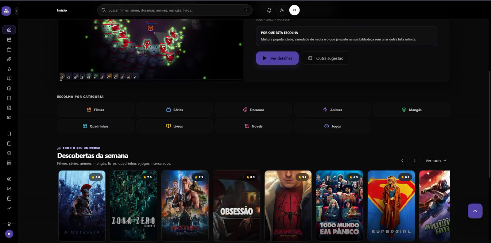
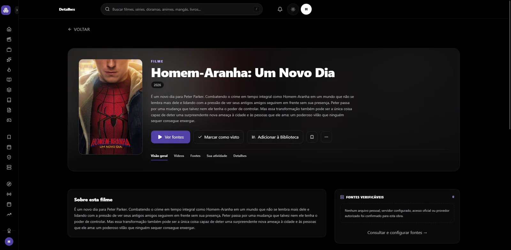
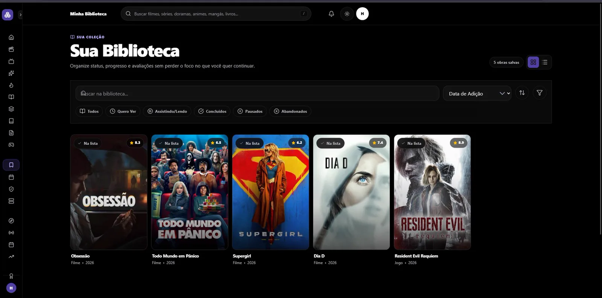
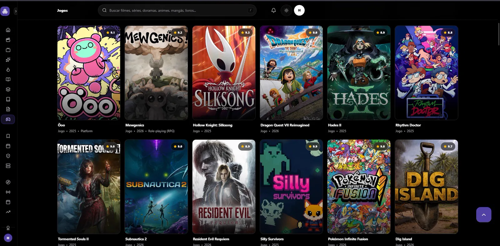
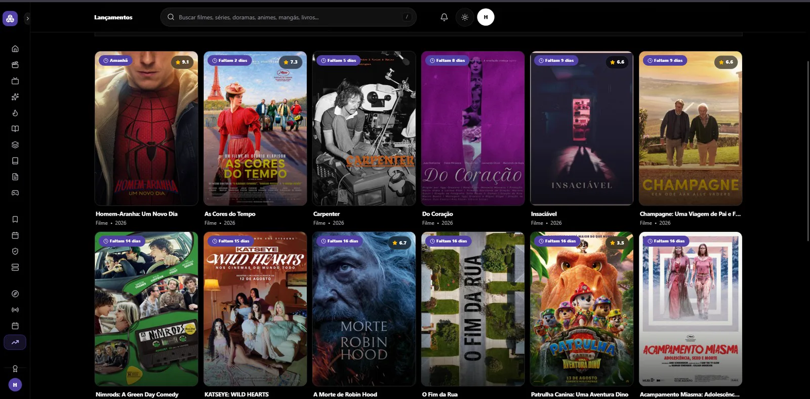
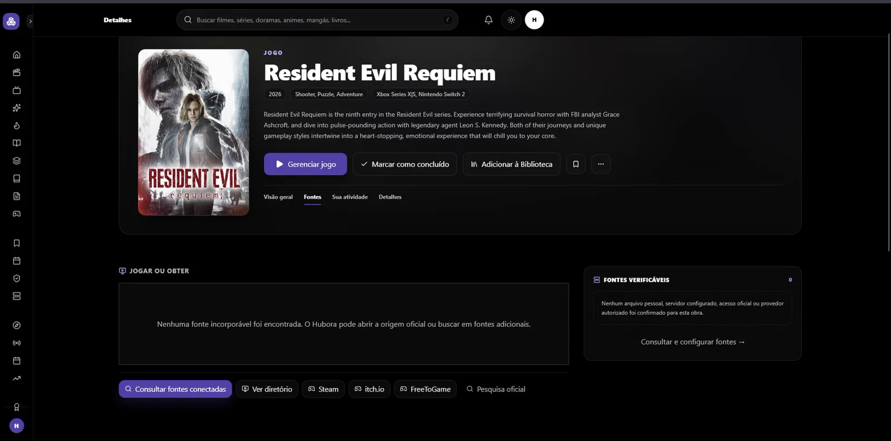

Contexto e problema
Biblioteca, progresso e descoberta ficavam dispersos entre serviços e formatos.
CASE / HUBORA
DEMONSTRAÇÃO PÚBLICAProduto público de cultura pop
Central local-first para descobrir, organizar e acompanhar filmes, séries, animes, livros, quadrinhos, novels e jogos.

PROVAS VISUAIS





O que esta galeria mostra
A seleção prioriza telas reais, cópias sanitizadas ou fluxos técnicos declarados, sempre com o contexto indicado na legenda.
Limite público
Dados operacionais, credenciais, integrações privadas e informações de clientes não fazem parte desta publicação.
Biblioteca, progresso e descoberta ficavam dispersos entre serviços e formatos.
Produto, UX/UI, arquitetura, integrações, persistência, autenticação, segurança, testes e deploy.
React 19, TypeScript, IndexedDB/Dexie, Supabase/RLS, Netlify Functions, PWA e múltiplos provedores.
O que este case não mostra
A disponibilidade de conteúdo depende de APIs, região, credenciais e permissão de incorporação.
Se a operação crescesse
A evolução depende do estado e das limitações descritas neste case; não é apresentada como funcionalidade já entregue.
A evidência pública não contém credenciais, dados pessoais ou informações internas sensíveis.